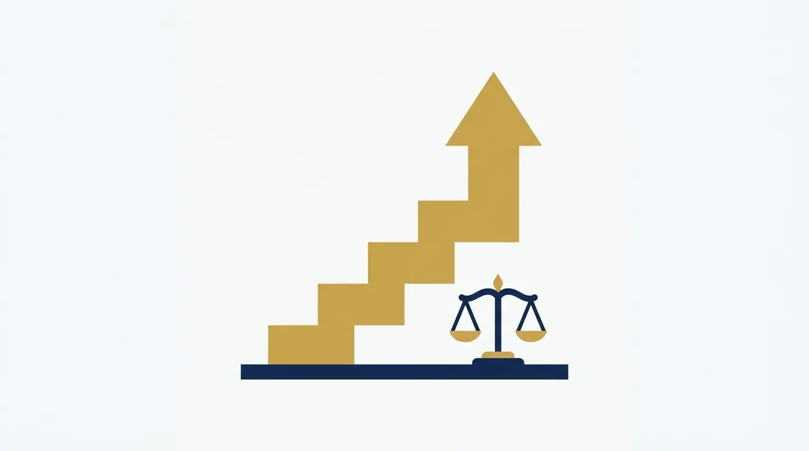

Tabela de Honorários da OAB 2026: Como Consultar e Usar
Todo advogado faz essa consulta em algum momento. Vai cobrar uma inicial trabalhista, um inventário, uma consulta avulsa, e bate a dúvida: quanto o mercado aceita? A resposta institucional está na tabela de honorários da OAB, e é por ela que este guia começa.
Mas atenção à palavra "começa". A tabela responde qual é o mínimo digno para cada ato. Ela não responde quanto o seu trabalho vale, e confundir as duas perguntas é um dos erros de precificação mais caros da advocacia.
Neste guia, você vai entender o que a tabela de honorários da OAB define, qual a força dela e como consultar a versão da sua seccional. Vai ver também como ela se relaciona com cada tipo de honorário e, principalmente, como usá-la do jeito certo: piso de dignidade, nunca teto de ambição.
No fim, você terá o quadro completo para precificar em 2026: o mínimo ético de um lado, o valor percebido do outro e o seu posicionamento decidindo em que ponto dessa régua o seu escritório atua.
O que é a tabela de honorários da OAB e qual a força dela
A tabela de honorários da OAB é o documento em que cada seccional fixa os valores mínimos recomendados para os atos da advocacia no seu estado. Petição inicial, contestação, audiência, consulta, contrato: os principais atos têm um valor de referência listado.
A competência vem do Estatuto da Advocacia, a Lei 8.906/94, que atribui ao Conselho Seccional a fixação da tabela válida no seu território. Por isso não existe uma tabela nacional única: existem 27 tabelas, uma por seccional, com valores e estruturas diferentes.
Qual a força normativa da tabela
Aqui mora uma confusão frequente. A tabela não é lei de preço fixo, e sim referência ética de piso. O advogado não é obrigado a cobrar exatamente o que ela indica; é orientado a não aviltar honorários cobrando muito abaixo dela sem justificativa.
Em duas situações, porém, a tabela ganha força concreta. Na fixação judicial de honorários por equidade, o Código de Processo Civil manda o juiz observar os valores da tabela da seccional, como você verá na seção de tipos de honorário. E nos processos disciplinares por aviltamento, a tabela serve de parâmetro para avaliar a conduta.
💡 DICA VALIOSA: Guarde esta síntese: a tabela de honorários da OAB protege o advogado em três frentes. É argumento de piso na negociação, é parâmetro obrigatório quando o juiz fixa honorários por equidade e é escudo ético contra a guerra de preços. Quem a conhece bem negocia com um documento institucional a seu favor.
Como consultar a tabela da sua seccional
A consulta é simples e deveria ser rotina anual, porque as seccionais atualizam os valores periodicamente.
O caminho padrão tem três passos. Primeiro, acesse o site da sua seccional (o portal nacional oab.org.br lista todas). Segundo, procure a seção de tabela de honorários, que costuma ficar em serviços ou institucional. Terceiro, baixe a versão vigente e confira se ela já é a válida para 2026, porque muitas seccionais atualizam os valores na virada do ano.
Na leitura, repare em três características que mudam de estado para estado:
- A unidade de medida. Algumas seccionais publicam valores em reais; outras usam uma unidade referencial própria, com valor corrigido periodicamente. Nesse caso, a tabela diz quantas unidades vale cada ato, e você multiplica pelo valor vigente da unidade: se a unidade vale R$ 60 e a petição inicial vale 20 unidades, o piso é R$ 1.200.
- A estrutura por área. As tabelas se organizam por ramo (cível, trabalhista, criminal, família, tributário), com dezenas ou centenas de atos listados.
- As regras de porcentagem. Em causas patrimoniais, é comum a tabela indicar percentuais mínimos sobre o valor da causa ou do proveito, além do valor fixo por ato.
| O que observar | Por que importa |
|---|---|
| Data da última atualização | Tabela defasada distorce o piso para baixo |
| Valor fixo × percentual | Quando há as duas referências, a prática é adotar a de maior valor |
| Atos extrajudiciais e consultivos | Consulta, parecer e contrato também têm piso |
| Regras de urgência e plantão | Vários estados preveem acréscimos por atuação fora do expediente |
| Honorários por hora | Referência útil para consultivo e contratos por tempo |
Um exemplo de leitura na prática
Imagine que você vai propor uma ação de cobrança e abre a tabela da sua seccional. No ato "ação de conhecimento" encontra duas referências: um valor mínimo em reais e um percentual sobre o valor da causa, valendo o que for maior.
A leitura correta: numa causa de R$ 20 mil com percentual mínimo de 10%, a referência é R$ 2.000, salvo se o valor fixo do ato for superior. Numa causa de R$ 500 mil, o mesmo percentual já indica R$ 50 mil, e é por isso que copiar só o valor fixo da tabela, ignorando a regra percentual, joga dinheiro fora em causas patrimoniais.
Repare ainda nas notas de rodapé da sua tabela. Elas costumam prever acréscimos por cumulação de pedidos, atuação em comarca distante e urgência, refinamentos que muita gente nunca leu.
Se a sua dúvida é mais ampla, sobre como transformar esses mínimos em uma política de preços completa, o nosso guia de honorários advocatícios cobre o cálculo, a negociação e o contrato em detalhe. Os dois artigos se completam: lá está o método, aqui está a referência institucional.
E uma provocação antes de seguir: se toda a sua proposta se sustenta no valor da tabela, o problema não é a tabela, é a ausência de um posicionamento que justifique mais. Construir essa percepção é trabalho de marketing jurídico, e é o que a JuriDigital faz por escritórios no país inteiro. Vale a conversa com o nosso time.
Como a tabela se relaciona com cada tipo de honorário
Os honorários advocatícios se dividem em contratuais, sucumbenciais e arbitrados, e a tabela de honorários da OAB conversa com cada um de um jeito diferente.
Nos contratuais, combinados livremente com o cliente, a tabela funciona como piso de referência da negociação. É o valor abaixo do qual o serviço deixa de ser digno, segundo a própria classe.
Nos sucumbenciais, fixados pelo juiz e pagos pela parte vencida, o parâmetro principal são os percentuais do Código de Processo Civil sobre a condenação. Mas quando a fixação é por equidade, caso típico das causas de valor muito baixo, o CPC é expresso no artigo 85, parágrafo 8º-A: o juiz deve observar os valores da tabela da seccional ou o mínimo de 10%, o que for maior.
Nos arbitrados, quando não há contrato nem acordo sobre o valor, o juiz fixa os honorários seguindo os critérios do artigo 85 do CPC. Nessa fixação, a tabela pesa por duas vias: a regra da equidade do próprio CPC, que manda observá-la, e o Código de Ética da OAB, que impõe o respeito aos mínimos da tabela sob pena de aviltamento. Na prática, ela deixa de ser recomendação e vira parâmetro legal da conta.
Há ainda um quarto cenário que merece registro: a atuação dativa, quando o advogado é nomeado para defender quem não pode pagar. Nesses casos, a remuneração costuma seguir tabelas específicas de convênio entre a seccional e o poder público, separadas da tabela geral de honorários. Se você atua ou pretende atuar como dativo, consulte a tabela do convênio do seu estado, porque os valores e a forma de pagamento são próprios.
⚠️ ATENÇÃO: A tabela não substitui contrato. Sem contrato nem acordo sobre o valor, você depende de arbitramento judicial, com anos de espera e a tabela apenas como parâmetro da conta; com contrato claro, você cobra o valor que negociou e usa a tabela só como argumento de entrada.
Por que a tabela é piso, e não teto

Agora o ponto central deste guia, aquele que separa escritórios que prosperam de escritórios que apenas giram: o uso estratégico da tabela.
O erro clássico é tratar a tabela de honorários da OAB como cardápio de preços. O advogado abre o documento, acha o ato, copia o valor e manda a proposta. Ao fazer isso, ele terceiriza a própria precificação para o mínimo institucional e comunica ao cliente que o seu trabalho vale o mesmo de qualquer outro.
Pense no que a tabela é de verdade: o consenso da classe sobre o mínimo digno. Ela nivela por baixo de propósito, porque precisa caber na realidade do advogado iniciante do interior e do escritório de grande centro ao mesmo tempo.
O seu preço, por outro lado, deveria refletir variáveis que nenhuma tabela alcança: a sua experiência naquele tipo de causa, a complexidade real do caso, a urgência, a responsabilidade envolvida e, sobretudo, o tamanho do problema que você resolve para o cliente.
| Precificação pela tabela | Precificação pelo valor |
|---|---|
| Copia o mínimo institucional | Parte do mínimo e constrói para cima |
| Compete por preço com todo o mercado | Compete por confiança e especialização |
| Cliente compara três orçamentos iguais | Cliente entende o que só você entrega |
| Margem espremida, volume obrigatório | Margem saudável, carteira selecionada |
| O escritório trabalha para pagar custo | O escritório financia o próprio crescimento |
A pergunta inevitável: o que autoriza um advogado a cobrar duas ou três vezes a referência? A resposta é posicionamento. Especialização visível, autoridade construída em conteúdo, avaliações de clientes, presença digital profissional. O cliente paga acima do piso quando percebe que não está contratando um ato processual, e sim uma solução com nome e reputação.
O custo invisível de competir pelo mínimo
Antes de seguir, vale nomear o que acontece com quem ignora essa lógica. Competir pelo piso empurra o escritório para a esteira do volume: mais causas para fechar a conta, menos tempo por cliente, mais erro, mais estresse e nenhuma sobra para investir em crescimento.
Pior: cliente que escolhe pelo menor preço é o primeiro a trocar de advogado pelo próximo menor preço. A carteira construída na guerra do mínimo é a mais frágil que existe, porque não tem lealdade nem margem.
O movimento inverso é virtuoso. Cada ponto de autoridade construído permite cobrar um pouco melhor; a margem extra financia mais autoridade; e o escritório sai da esteira. Não acontece da noite para o dia, mas começa numa decisão: parar de usar o piso institucional como preço de tabela.
É exatamente essa percepção que o marketing jurídico constrói. A JuriDigital faz esse trabalho por escritórios em todo o país: transforma competência técnica em autoridade visível, para a negociação começar em outro patamar. Se a sua proposta ainda compete por preço, converse com o nosso time.
Erros de precificação que a tabela não resolve
A tabela dá o piso, mas não resolve os erros de uso que mais drenam a rentabilidade. Três merecem alerta, todos ligados a ela.
O primeiro é assumir que o piso da seccional cobre o seu custo. A tabela é estadual e genérica; a sua estrutura é particular. Em escritórios de custo mais alto, o mínimo da tabela pode ficar abaixo do custo real da hora, e nesse caso cobrar o piso é pagar para trabalhar. O cálculo completo do custo-hora está no nosso guia de honorários advocatícios.
O segundo é citar a tabela errada. Versão desatualizada, tabela de outra seccional achada no Google ou valor sem as notas de acréscimo: qualquer desses deslizes na proposta mina a credibilidade do argumento institucional que você queria usar a favor.
O terceiro é esquecer o trabalho invisível. Consulta respondida por telefone, análise de contrato "rapidinha", parecer verbal na reunião: tudo isso tem referência na tabela de honorários da OAB e quase nunca é cobrado. Somado no ano, o consultivo informal gratuito costuma ser o maior desconto que o escritório concede sem perceber.
🚀 OPORTUNIDADE: Enquanto boa parte da advocacia disputa o cliente pelo menor preço, o espaço acima da tabela segue pouco habitado. Escritórios que constroem autoridade cobram melhor, escolhem casos e atendem com folga. O piso é público e igual para todos; o teto é privado e construído por posicionamento.
Percebeu o padrão? Nenhum desses erros se corrige com a tabela na mão; todos se corrigem com método de gestão e posicionamento. A tabela de honorários da OAB é o começo respeitável da conversa, nunca o argumento final.
Perguntas frequentes sobre a tabela de honorários da OAB
A tabela de honorários da OAB é obrigatória?
Não como preço fixo. Ela é referência de valores mínimos, com força ética contra o aviltamento e força concreta na fixação de honorários por equidade, em que o CPC (art. 85, §8º-A) manda o juiz observar os valores da tabela. Nos contratos com cliente, prevalece o valor livremente negociado.
Advogado pode cobrar abaixo da tabela da OAB?
A cobrança muito abaixo da tabela, de forma habitual e sem justificativa, caracteriza aviltamento de honorários e pode gerar processo disciplinar. Reduções pontuais justificadas, como para cliente hipossuficiente (sem condições financeiras de pagar o valor integral), são avaliadas caso a caso pelo Tribunal de Ética e Disciplina da OAB.
Onde encontro a tabela de honorários da minha seccional?
No site da seccional do seu estado, geralmente na área de serviços ou institucional. O portal nacional da OAB lista todas as seccionais. Confira sempre a data de vigência, porque os valores passam por atualizações periódicas.
Existe uma tabela de honorários nacional?
Não. A fixação é competência de cada Conselho Seccional, válida para o respectivo estado. Por isso os valores variam bastante pelo país, refletindo as realidades econômicas locais.
O juiz usa a tabela da OAB para fixar honorários?
Usa. No arbitramento, quando não há contrato nem acordo, o juiz segue os critérios do art. 85 do CPC, e na fixação por equidade a tabela é de observância obrigatória: vale o valor dela ou o mínimo de 10%, o que for maior (art. 85, §8º-A). Nos sucumbenciais comuns, o parâmetro principal são os percentuais do CPC sobre a condenação.
Quanto cobrar por hora de trabalho advocatício?
Comece pela referência de hora da tabela da sua seccional, que funciona como piso institucional. Depois ajuste pelo seu custo real, posicionamento e especialização; o cálculo completo do custo-hora, com exemplo numérico, está no nosso guia de honorários advocatícios. A tabela indica o mínimo; o seu mercado e a sua autoridade definem o resto.
Use a tabela como aliada, não como limite
Recapitulando: a tabela de honorários da OAB é fixada por cada seccional e funciona como o piso institucional da advocacia, com força ética contra o aviltamento e força legal na fixação de honorários por equidade. Consultá-la anualmente é rotina obrigatória de gestão.
Usá-la bem, porém, é outra habilidade. O escritório saudável parte dela para cima: conhece o custo da própria hora, precifica pelo valor entregue e constrói o posicionamento que justifica a diferença. A tabela segue na gaveta, consultada e respeitada, enquanto a proposta vai para a mesa com outro número.
Essa construção é o nosso trabalho. A JuriDigital transforma escritórios tecnicamente excelentes em marcas percebidas como referência, com site, conteúdo e presença digital que mudam o patamar da negociação. Fale com a nossa equipe e pare de negociar a partir do mínimo.